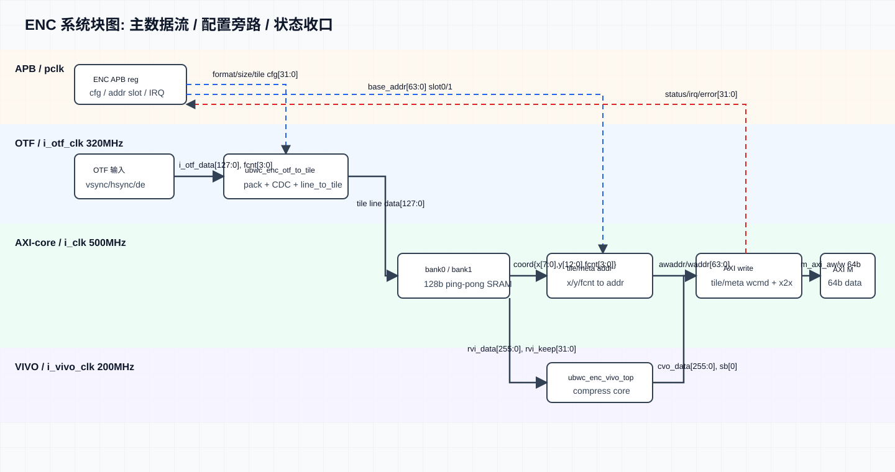
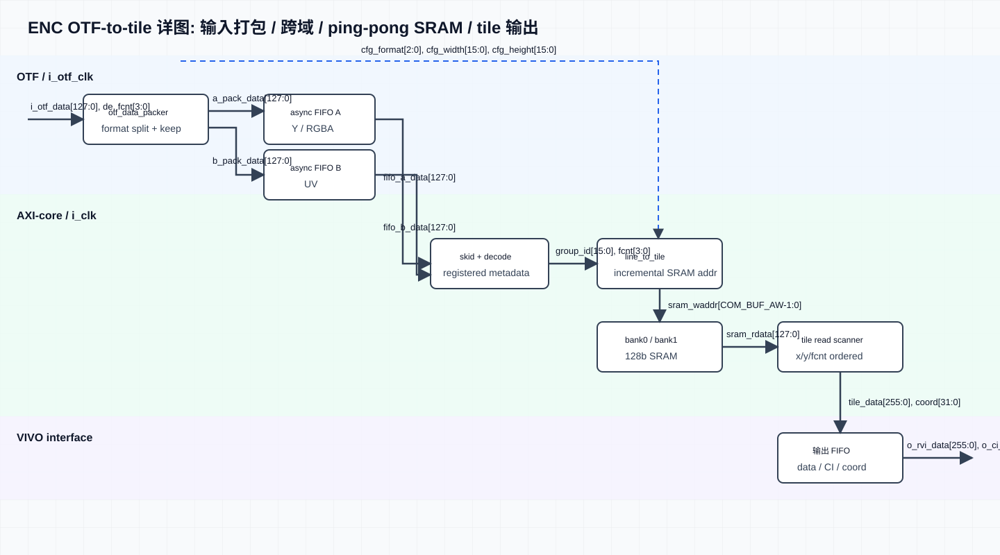
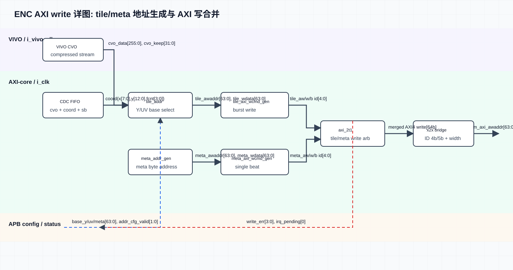
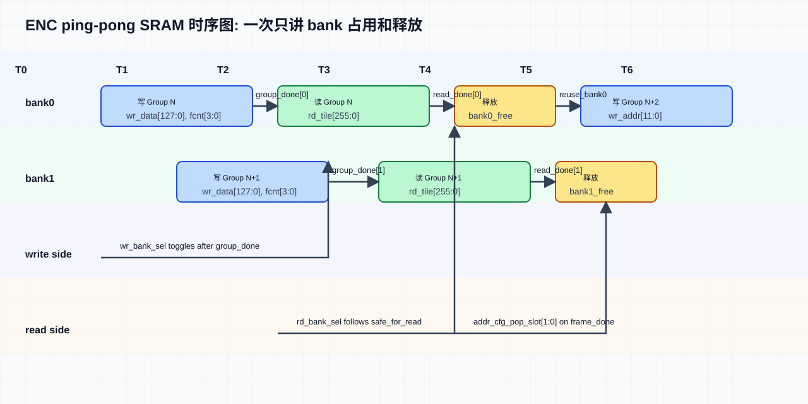
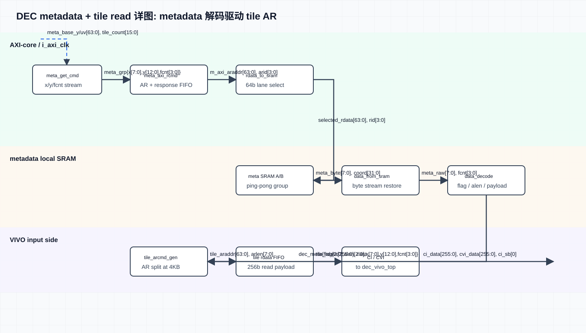
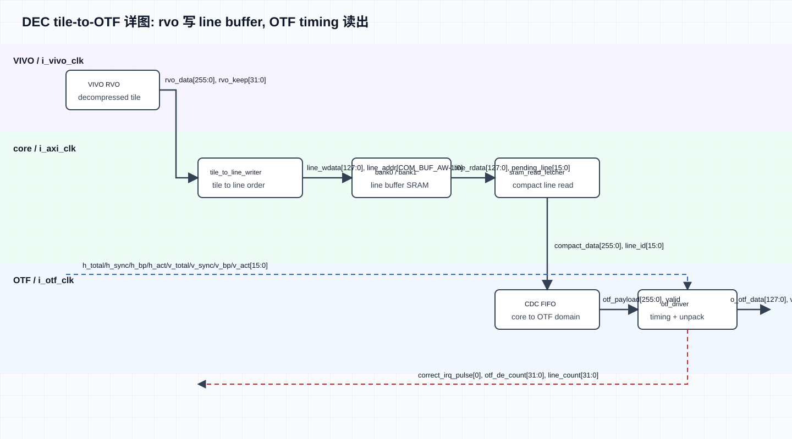

1. 当前基线
| 项目 | 当前规格 |
|---|---|
| RTL 顶层 | src/enc/ubwc_enc_wrapper_top.svsrc/dec/ubwc_dec_wrapper_top.v |
| 支持格式 | 0=RGBA8888，1=RGBA1010102，2=YUV420_8/NV12，3=YUV420_10/P010 |
| 不支持格式 | YUV422_8，YUV422_10 |
| AXI ID / FCNT | 内部按 4 bit 使用，fcnt[0] 选择地址 slot0/slot1。 |
| 连续帧模型 | 图像格式、尺寸、layout 和 timing 不变时，软件每帧只补充一组 base address；硬件按 fcnt/slot 连续处理。 |
2. 时钟域规格
| 时钟域 | 频率 | 周期 | ENC 端口 | DEC 端口 | 主要逻辑 |
|---|---|---|---|---|---|
| APB clock | 100 MHz | 10.000 ns | PCLK | PCLK | APB 寄存器访问 |
| AXI/control clock | 500 MHz | 2.000 ns | i_clk | i_axi_clk | AXI 读写、APB 配置同步后的控制逻辑、地址和统计状态 |
| core/VIVO clock | 200 MHz | 5.000 ns | i_vivo_clk | i_vivo_clk | ubwc_enc_vivo_top / ubwc_dec_vivo_top |
| OTF clock | 320 MHz | 3.125 ns | i_otf_clk | i_otf_clk | OTF 输入或输出视频接口 |
APB 只负责寄存器配置，不作为视频数据通路时钟。AXI/control、core/VIVO 和 OTF 之间必须通过异步 FIFO 或明确 CDC 逻辑隔离。
多 bit payload/counter 不允许直接用两级触发器跨时钟域；异步复位释放必须在目标时钟域同步。
3. 寄存器访问规格
3.1 APB 访问规则
| 项目 | 规格 |
|---|---|
| 寄存器宽度 | 32 bit |
| 地址对齐 | 4 byte 对齐，本文 offset 均为 wrapper APB base 下的 byte offset |
| 64 bit base address 写法 | 先写 low 32 bit，再写 high 32 bit |
| APB ready/error | PREADY=1，PSLVERR=0 |
| 访问类型 | RO 只读；RW 可读写；W1P 写 1 产生脉冲 |
3.2 ENC Register Summary
| Offset | Register | Access | 功能 | 配置频率 |
|---|---|---|---|---|
0x000 | REG_VERSION | RO | IP version | 上电后读取一次 |
0x004 | REG_DATE | RO | RTL date | 上电后读取一次 |
0x008 | REG_TILE_CFG0 | RW | UBWC enable、bank swizzle、highest bank bit、bank spread | 格式/尺寸/layout 变化时配置 |
0x00C | REG_TILE_CFG1 | RW | 4-line format、RGBA lossy 2:1、tile pitch | 格式/尺寸/layout 变化时配置 |
0x010 | REG_ENC_CI_CFG0 | RW | CI input type、ALEN | 格式变化时配置 |
0x014 | REG_ENC_CI_CFG1 | RW | CI lossy，sideband 保留 | 格式变化时配置 |
0x018 | REG_ENC_CI_CFG2 | RW | 保留 UBWC CI cfg，软件写 0 | 格式变化时配置 |
0x01C | REG_ENC_CI_CFG3 | RW | 保留 UBWC CI cfg，软件写 0 | 格式变化时配置 |
0x020 | REG_OTF_CFG0 | RW | 输入 OTF format | 格式变化时配置 |
0x024 | REG_OTF_CFG1 | RW | 输入 width/height | 格式/尺寸变化时配置 |
0x028 | REG_OTF_CFG2 | RW | tile_w/tile_h | 格式/尺寸变化时配置 |
0x02C | REG_OTF_CFG3 | RW | Y tile columns、UV tile columns | 格式/尺寸变化时配置 |
0x030/0x034 | REG_META_BASE_Y_LO/HI | RW | Y/RGBA metadata 写入基地址 | 每帧配置 |
0x038/0x03C | REG_TILE_BASE_Y_LO/HI | RW | Y/RGBA compressed tile 写入基地址 | 每帧配置 |
0x040/0x044 | REG_META_BASE_UV_LO/HI | RW | UV metadata 写入基地址；RGBA 不关心 | 每帧配置 |
0x048/0x04C | REG_TILE_BASE_UV_LO/HI | RW | UV compressed tile 写入基地址；写完地址后由 IRQ_CTRL[5] 启动本帧 | 每帧配置 |
0x050 | REG_META_ACTIVE_SIZE | RW | metadata active width/height | 格式/尺寸变化时配置 |
0x054 | REG_META_PITCH | RW | metadata plane pitch | 格式/尺寸变化时配置 |
0x058 | REG_STATUS0 | RO | idle/error/busy/frame_done/address slot status | 运行中读取 |
0x05C | REG_STATUS1 | RO | stage_done bitmap | 运行中读取 |
0x060 | REG_IRQ_CTRL | RW/W1P/RO | irq_enable、irq_clear、start、irq_pending、correct/error pending | 初始化/中断处理 |
0x064 | REG_STATUS2 | RO | IRQ status mirror | 运行中读取 |
0x068..0x09C | REG_*_COUNT0/1 | RO | metadata、tileaddr、OTF、AXI W 计数，后缀 0/1 对应 fcnt[0] | 调试读取 |
3.3 DEC Register Summary
| Offset | Register | Access | 功能 | 配置频率 |
|---|---|---|---|---|
0x000 | REG_VERSION | RO | IP version | 上电后读取一次 |
0x004 | REG_DATE | RO | RTL date | 上电后读取一次 |
0x008 | APB_ADDR_TILE_CFG0 | RW | bank swizzle、highest bank bit、bank spread、4-line、RGBA lossy 2:1 | 格式/尺寸/layout 变化时配置 |
0x00C | APB_ADDR_TILE_CFG1 | RW | tile pitch | 格式/尺寸/layout 变化时配置 |
0x010 | APB_ADDR_TILE_CFG2 | RW | CI input type、lossy、alpha mode | 格式变化时配置 |
0x014 | APB_ADDR_VIVO_CFG | RW | VIVO enable、soft reset | 初始化或策略变化时配置 |
0x018 | APB_ADDR_OTF_CFG0 | RW | 输出 image width、format | 格式/尺寸/timing 变化时配置 |
0x01C | APB_ADDR_OTF_CFG1 | RW | h_total、h_sync/HSA | timing 变化时配置 |
0x020 | APB_ADDR_OTF_CFG2 | RW | h_bp/HBP、h_act/HACT | timing 变化时配置 |
0x024 | APB_ADDR_OTF_CFG3 | RW | v_total、v_sync/VSA | timing 变化时配置 |
0x028 | APB_ADDR_OTF_CFG4 | RW | v_bp/VBP、v_act/VACT | timing 变化时配置 |
0x02C | APB_ADDR_META_CFG0 | RW | Y/RGBA metadata tile_x/tile_y，YUV420 UV tile 数内部推导 | 格式/尺寸变化时配置 |
0x030/0x034 | REG_META_BASE_Y_LO/HI | RW | RGBA/Y metadata 读取基地址 | 每帧配置 |
0x038/0x03C | REG_TILE_BASE_Y_LO/HI | RW | RGBA/Y compressed tile 读取基地址 | 每帧配置 |
0x040/0x044 | REG_META_BASE_UV_LO/HI | RW | UV metadata 读取基地址 | 每帧配置 |
0x048/0x04C | REG_TILE_BASE_UV_LO/HI | RW | UV compressed tile 读取基地址；RGBA 不关心 | 每帧配置 |
0x050 | APB_ADDR_STATUS0 | RO | frame_active、meta/tile/vivo/otf busy、idle status | 运行中读取 |
0x054 | APB_ADDR_STATUS1 | RO | stage_done、frame_done、stage_seen | 运行中读取 |
0x058 | APB_ADDR_STATUS2 | RO | VIVO idle bitmap | 运行中读取 |
0x05C | APB_ADDR_STATUS3 | RO | VIVO error bitmap | 运行中读取 |
0x060 | APB_ADDR_IRQ_CTRL | RW/W1P/RO | irq_enable、irq_clear、start、irq_pending、correct/error pending | 初始化/中断处理 |
0x064 | APB_ADDR_STATUS4 | RO | IRQ status mirror | 运行中读取 |
0x068 | APB_ADDR_STAT_META | RO | metadata valid tile count | 调试读取 |
0x06C | APB_ADDR_STAT_TILE | RO | tile address valid tile count | 调试读取 |
0x070 | APB_ADDR_STAT_OTF_TILE | RO | tile-to-OTF accepted tile count | 调试读取 |
0x074 | APB_ADDR_STAT_OTF_LINE | RO | OTF output line count | 调试读取 |
0x078 | APB_ADDR_STAT_OTF_DE | RO | OTF output de && ready beat count | 调试读取 |
3.4 软件访问顺序摘要
ENC
read VERSION/DATE
write static TILE/CI/OTF/META config
for each frame:
write META_BASE_Y low/high
write TILE_BASE_Y low/high
write META_BASE_UV low/high
write TILE_BASE_UV low/high
write IRQ_CTRL[5]=1
start OTF input stream
poll/handle IRQ and STATUS
DEC
read VERSION/DATE write static TILE/VIVO/META/OTF config for each frame: write META_BASE_Y low/high write TILE_BASE_Y low/high write META_BASE_UV low/high write TILE_BASE_UV low/high software writes IRQ_CTRL[5]=1 when address set is valid poll/handle IRQ and STATUS
4. 模块数据流图
本章按功能专题展示 ENC/DEC 数据路径、配置路径和关键缓存调度关系。图中按时钟域分区，并在关键箭头旁标注主要信号和位宽。
| 分类 | 图 | 说明 |
|---|---|---|
| ENC | 系统块图 | 顶层主数据路径，APB/status 用旁路收口 |
| ENC | OTF-to-tile 详图 | OTF pack、async FIFO A/B、line-to-tile、bank0/1、tile read scanner |
| ENC | AXI write 详图 | tile/meta address、tile/meta write command、AXI merge/x2x |
| ENC | ping-pong SRAM 时序图 | bank0/bank1 写行组与读 tile 的错相调度 |
| DEC | 总体微架构图 | 按当前 RTL 展开 APB/status、metadata read/decode、tile read、VIVO decode、tile-to-OTF 输出 |
| DEC | metadata + tile read 详图 | metadata fetch/decode 与 tile read command 两条路径 |
| DEC | tile-to-OTF 详图 | VIVO rvo、line writer、SRAM fetch、OTF driver |
4.1 ENC 系统块图

4.2 ENC OTF-to-tile 详图

4.3 ENC AXI write 详图

4.4 ENC Ping-pong SRAM 时序图

4.5 DEC 总体微架构图

4.6 DEC metadata + tile read 详图

4.7 DEC tile-to-OTF 详图

5. ENC 规格
5.1 数据流
OTF input(i_otf_clk) -> ubwc_enc_otf_to_tile -> external bank0/bank1 SRAM -> ubwc_enc_vivo_top(i_vivo_clk) -> tile/meta AXI write(i_clk)
ENC 通过 IRQ_CTRL[5] 写 1 产生 START token。软件写好静态配置和本帧输出 buffer 地址后，先写 IRQ_CTRL[5]=1，再送上游 OTF vsync/hsync/de/data。
5.2 每帧地址 Slot
| 地址 | 名称 | 含义 |
|---|---|---|
0x030/0x034 | REG_META_BASE_Y_LO/HI | Y/RGBA metadata 存储基地址 |
0x038/0x03C | REG_TILE_BASE_Y_LO/HI | Y/RGBA compressed tile 存储基地址 |
0x040/0x044 | REG_META_BASE_UV_LO/HI | UV metadata 存储基地址；RGBA 不关心，可写 0 |
0x048/0x04C | REG_TILE_BASE_UV_LO/HI | UV compressed tile 存储基地址；写完四个地址后写 IRQ_CTRL[5] 启动 |
硬件内部保留两组地址 slot。fcnt[0]=0 使用 slot0，fcnt[0]=1 使用 slot1。如果当前帧需要的 slot 未配置，硬件应阻塞并上报地址配置错误状态/中断。
5.3 配置频率
| 配置项 | 配置频率 |
|---|---|
TILE_CFG / CI_CFG / OTF_CFG / META_ACTIVE_SIZE / META_PITCH | 图像格式、尺寸或 layout 变化时配置 |
| 输出 buffer base address | 每帧配置，或每新增一个输出 buffer 配置 |
| IRQ enable | 上电后一次，或中断策略变化时配置 |
6. DEC 规格
6.1 数据流
UBWC metadata/tile AXI read(i_axi_clk) -> ubwc_dec_vivo_top(i_vivo_clk) -> ubwc_dec_tile_to_otf -> external bank0/bank1 SRAM -> OTF output(i_otf_clk)
DEC 通过 IRQ_CTRL[5] 写 1 启动。软件写好静态配置和一组输入 UBWC buffer 地址后，写 IRQ_CTRL[5]=1，硬件锁存该地址组并启动本帧 decode。
6.2 每帧地址 Slot
| 地址 | 名称 | 含义 |
|---|---|---|
0x030/0x034 | REG_META_BASE_Y_LO/HI | RGBA/Y metadata 读取基地址 |
0x038/0x03C | REG_TILE_BASE_Y_LO/HI | RGBA/Y compressed tile 读取基地址 |
0x040/0x044 | REG_META_BASE_UV_LO/HI | UV metadata 读取基地址 |
0x048/0x04C | REG_TILE_BASE_UV_LO/HI | UV compressed tile 读取基地址；RGBA 不关心 |
DEC 同样按 fcnt[0] 在 slot0/slot1 间切换。相邻两帧可以使用不同 base address，其他静态信息只保留一份，并在格式、尺寸或 timing 变化时重新配置。
6.3 配置频率
| 配置项 | 配置频率 |
|---|---|
TILE_CFG / CI_CFG / VIVO_CFG / META_CFG / OTF timing | 图像格式、尺寸、layout 或 timing 变化时配置 |
| 输入 UBWC buffer base address | 每帧配置，或每新增一个输入 UBWC buffer 配置 |
| IRQ enable | 上电后一次，或中断策略变化时配置 |
7. OTF Timing 约定
| 标记 | RTL 配置项 | 说明 |
|---|---|---|
| HSA | h_sync | 水平 sync 宽度 |
| HBP | h_bp | 水平 back porch |
| HACT | h_act | 水平 active 宽度，通常等于输出图像宽度 |
| HFP | h_total - h_sync - h_bp - h_act | 水平 front porch |
| VSA | v_sync | 垂直 sync 行数 |
| VBP | v_bp | 垂直 back porch |
| VACT | v_act | 垂直 active 高度，通常等于输出图像高度 |
| VFP | v_total - v_sync - v_bp - v_act | 垂直 front porch |
OTF_CFG1 = {h_sync, h_total}
OTF_CFG2 = {h_act, h_bp}
OTF_CFG3 = {v_sync, v_total}
OTF_CFG4 = {v_act, v_bp}
8. 外部 SRAM Bank
ENC 和 DEC wrapper 都使用外部 bank0/bank1 作为 ping-pong 工作 SRAM，数据宽度为 128 bit。bank0/bank1 是工作 buffer，不固定等价于 Y/UV plane。
| 模块 | 当前默认 COM_BUF_AW | 每个 bank 容量 | 说明 |
|---|---|---|---|
| ENC | 12 | 4096 x 128 bit = 64 KiB | 当前默认参数；4096 宽 RGBA/YUV420 均固定 12 bit，YUV420 通过 Y/UV 同 bank 时分调度覆盖 |
| DEC | 12 | 4096 x 128 bit = 64 KiB | 当前默认参数；4096 宽 RGBA/YUV420 均按 12 bit 工作 bank 集成 |
bank_words = 2 ^ COM_BUF_AW bank_bytes = bank_words * 16
9. 状态和中断
- 正确中断和 frame_done 在最后一个有效输出数据完成后产生。
- 错误中断表示地址未配置、OTF 输入错误、FIFO overflow、VIVO error 等异常事件。
- 中断 pending 应保持到软件写
IRQ_CTRL[1]=1清除。 - 统计寄存器只做调试和观测，不应作为核心 done 判断依据。
10. Wrapper 顶层接口
本章列出当前 RTL wrapper 的集成级端口清单，每一行对应一个端口信号。
10.1 ENC Wrapper: ubwc_enc_wrapper_top.sv
| 接口组 | 信号 | 方向 | 位宽 | 说明 |
|---|---|---|---|---|
| APB slave | PCLK | input | 1 bit | APB clock |
| APB slave | PRESETn | input | 1 bit | APB async reset, active low |
| APB slave | PSEL | input | 1 bit | APB select |
| APB slave | PENABLE | input | 1 bit | APB enable phase |
| APB slave | PADDR | input | APB_AW | APB byte address |
| APB slave | PWRITE | input | 1 bit | APB write/read select |
| APB slave | PWDATA | input | APB_DW | APB write data |
| APB slave | PREADY | output | 1 bit | APB ready |
| APB slave | PSLVERR | output | 1 bit | APB slave error |
| APB slave | PRDATA | output | APB_DW | APB read data |
| Clock/reset | i_clk | input | 1 bit | ENC core/control clock |
| Clock/reset | i_otf_clk | input | 1 bit | OTF input clock |
| Clock/reset | i_vivo_clk | input | 1 bit | VIVO clock |
| Clock/reset | i_rstn | input | 1 bit | Global reset, active low |
| OTF input | i_otf_vsync | input | 1 bit | Input frame sync |
| OTF input | i_otf_hsync | input | 1 bit | Input line sync |
| OTF input | i_otf_de | input | 1 bit | Input data enable |
| OTF input | i_otf_data | input | 128 bit | Input pixel data |
| OTF input | i_otf_fcnt | input | 4 bit | Input frame count |
| OTF input | i_otf_lcnt | input | 12 bit | Input line count |
| OTF input | o_otf_ready | output | 1 bit | ENC 对 OTF 输入的反压 |
| SRAM bank0 | o_bank0_en | output | 1 bit | Bank0 SRAM enable |
| SRAM bank0 | o_bank0_wen | output | 1 bit | Bank0 SRAM write enable |
| SRAM bank0 | o_bank0_addr | output | COM_BUF_AW | Bank0 SRAM address |
| SRAM bank0 | o_bank0_din | output | COM_BUF_DW | Bank0 SRAM write data |
| SRAM bank0 | i_bank0_dout | input | COM_BUF_DW | Bank0 SRAM read data |
| SRAM bank0 | i_bank0_dout_vld | input | 1 bit | Bank0 SRAM read data valid |
| SRAM bank1 | o_bank1_en | output | 1 bit | Bank1 SRAM enable |
| SRAM bank1 | o_bank1_wen | output | 1 bit | Bank1 SRAM write enable |
| SRAM bank1 | o_bank1_addr | output | COM_BUF_AW | Bank1 SRAM address |
| SRAM bank1 | o_bank1_din | output | COM_BUF_DW | Bank1 SRAM write data |
| SRAM bank1 | i_bank1_dout | input | COM_BUF_DW | Bank1 SRAM read data |
| SRAM bank1 | i_bank1_dout_vld | input | 1 bit | Bank1 SRAM read data valid |
| AXI write address | o_m_axi_awid | output | AXI_IDW+1 | AXI AW ID |
| AXI write address | o_m_axi_awaddr | output | AXI_AW | AXI AW address |
| AXI write address | o_m_axi_awlen | output | AXI_LENW | AXI AW burst length |
| AXI write address | o_m_axi_awsize | output | 3 bit | AXI AW beat size |
| AXI write address | o_m_axi_awburst | output | 2 bit | AXI AW burst type |
| AXI write address | o_m_axi_awlock | output | 2 bit | AXI AW lock |
| AXI write address | o_m_axi_awcache | output | 4 bit | AXI AW cache attribute |
| AXI write address | o_m_axi_awprot | output | 3 bit | AXI AW protection attribute |
| AXI write address | o_m_axi_awvalid | output | 1 bit | AXI AW valid |
| AXI write address | i_m_axi_awready | input | 1 bit | AXI AW ready |
| AXI write data | o_m_axi_wdata | output | AXI_DW | AXI W data |
| AXI write data | o_m_axi_wstrb | output | AXI_DW/8 | AXI W byte strobe |
| AXI write data | o_m_axi_wvalid | output | 1 bit | AXI W valid |
| AXI write data | o_m_axi_wlast | output | 1 bit | AXI W last beat |
| AXI write data | i_m_axi_wready | input | 1 bit | AXI W ready |
| AXI write response | i_m_axi_bid | input | AXI_IDW+1 | AXI B ID |
| AXI write response | i_m_axi_bresp | input | 2 bit | AXI B response |
| AXI write response | i_m_axi_bvalid | input | 1 bit | AXI B valid |
| AXI write response | o_m_axi_bready | output | 1 bit | AXI B ready |
| Done/IRQ | o_stage_done | output | 8 bit | Stage done bitmap |
| Done/IRQ | o_frame_done | output | 1 bit | Frame done flag |
| Done/IRQ | o_irq | output | 1 bit | Interrupt output |
10.2 DEC Wrapper: ubwc_dec_wrapper_top.v
| 接口组 | 信号 | 方向 | 位宽 | 说明 |
|---|---|---|---|---|
| APB slave | PCLK | input | 1 bit | APB clock |
| APB slave | PRESETn | input | 1 bit | APB async reset, active low |
| APB slave | PSEL | input | 1 bit | APB select |
| APB slave | PENABLE | input | 1 bit | APB enable phase |
| APB slave | PADDR | input | APB_AW | APB byte address |
| APB slave | PWRITE | input | 1 bit | APB write/read select |
| APB slave | PWDATA | input | APB_DW | APB write data |
| APB slave | PREADY | output | 1 bit | APB ready |
| APB slave | PSLVERR | output | 1 bit | APB slave error |
| APB slave | PRDATA | output | APB_DW | APB read data |
| OTF/VIVO clock | i_otf_clk | input | 1 bit | OTF output clock |
| OTF/VIVO clock | i_vivo_clk | input | 1 bit | VIVO clock |
| OTF/VIVO clock | i_otf_rstn | input | 1 bit | OTF reset, active low |
| OTF output | o_otf_vsync | output | 1 bit | Output frame sync |
| OTF output | o_otf_hsync | output | 1 bit | Output line sync |
| OTF output | o_otf_de | output | 1 bit | Output data enable |
| OTF output | o_otf_data | output | 128 bit | Output pixel data |
| OTF output | o_otf_fcnt | output | 4 bit | Output frame count |
| OTF output | o_otf_lcnt | output | 12 bit | Output line count |
| OTF output | i_otf_ready | input | 1 bit | Downstream OTF ready |
| SRAM bank0 | o_bank0_en | output | 1 bit | Bank0 SRAM enable |
| SRAM bank0 | o_bank0_wen | output | 1 bit | Bank0 SRAM write enable |
| SRAM bank0 | o_bank0_addr | output | COM_BUF_AW | Bank0 SRAM address |
| SRAM bank0 | o_bank0_din | output | COM_BUF_DW | Bank0 SRAM write data |
| SRAM bank0 | i_bank0_dout | input | COM_BUF_DW | Bank0 SRAM read data |
| SRAM bank0 | i_bank0_dout_vld | input | 1 bit | Bank0 SRAM read data valid |
| SRAM bank1 | o_bank1_en | output | 1 bit | Bank1 SRAM enable |
| SRAM bank1 | o_bank1_wen | output | 1 bit | Bank1 SRAM write enable |
| SRAM bank1 | o_bank1_addr | output | COM_BUF_AW | Bank1 SRAM address |
| SRAM bank1 | o_bank1_din | output | COM_BUF_DW | Bank1 SRAM write data |
| SRAM bank1 | i_bank1_dout | input | COM_BUF_DW | Bank1 SRAM read data |
| SRAM bank1 | i_bank1_dout_vld | input | 1 bit | Bank1 SRAM read data valid |
| AXI read clock | i_axi_clk | input | 1 bit | AXI read master clock |
| AXI read clock | i_axi_rstn | input | 1 bit | AXI read master reset, active low |
| AXI read address | o_m_axi_arid | output | AXI_IDW+1 | AXI AR ID |
| AXI read address | o_m_axi_araddr | output | AXI_AW | AXI AR address |
| AXI read address | o_m_axi_arlen | output | AXI_LENW | AXI AR burst length |
| AXI read address | o_m_axi_arsize | output | 4 bit | AXI AR beat size |
| AXI read address | o_m_axi_arburst | output | 2 bit | AXI AR burst type |
| AXI read address | o_m_axi_arlock | output | 1 bit | AXI AR lock |
| AXI read address | o_m_axi_arcache | output | 4 bit | AXI AR cache attribute |
| AXI read address | o_m_axi_arprot | output | 3 bit | AXI AR protection attribute |
| AXI read address | o_m_axi_arvalid | output | 1 bit | AXI AR valid |
| AXI read address | i_m_axi_arready | input | 1 bit | AXI AR ready |
| AXI read data | i_m_axi_rid | input | AXI_IDW+1 | AXI R ID |
| AXI read data | i_m_axi_rdata | input | AXI_DW | AXI R data |
| AXI read data | i_m_axi_rvalid | input | 1 bit | AXI R valid |
| AXI read data | i_m_axi_rresp | input | 2 bit | AXI R response |
| AXI read data | i_m_axi_rlast | input | 1 bit | AXI R last beat |
| AXI read data | o_m_axi_rready | output | 1 bit | AXI R ready |
| Done/IRQ | o_stage_done | output | 5 bit | Stage done bitmap |
| Done/IRQ | o_frame_done | output | 1 bit | Frame done flag |
| Done/IRQ | o_irq | output | 1 bit | Interrupt output |
ENC wrapper 对外是 AXI write master；DEC wrapper 对外是 AXI read master。当前外部 AXI ID 端口宽度为
AXI_IDW+1，内部 frame count/AXI ID 仍按 4 bit 语义传递。